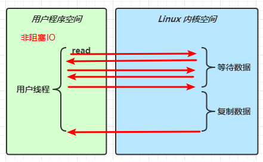
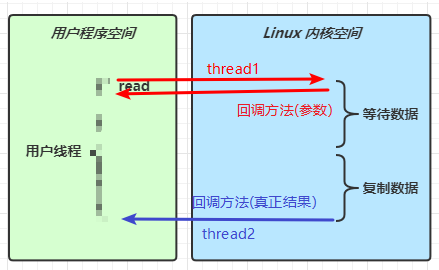

三大组件
Channel
channel 类似于 stream，是读写数据的双向通道，可以从 channel 将数据读入 buffer，也可以将 buffer 的数据写入 channel。
常见的 Channel 有：
FileChannel：文件DatagramChannel：UDPSocketChannel：服务器、客户端 TCPServerSocketChannel：服务器 TCP
Buffer
buffer 用来缓冲读写数据。常见的 buffer 有：
ByteBuffershortBufferIntBuffer- ... ...
例子：Channel & Buffe
// 获取 channel
try (FileChannel channel = new FileInputStream("data.txt").getChannel()) {
// 获取 buffer
ByteBuffer buffer= ByteBuffer.allocate(10);
// 读取 channel --> buffer
while(channel.read(buffer) != -1) {
buffer.flip(); // 将 buffer 切换至读模式
while(buffer.hasRemaining()) {
System.out.println((char) buffer.get());
}
System.out.println("------");
buffer.clear(); // 将 buffer 切换至写模式
}
} catch (IOException e) {
e.printStackTrace();
}
Selector
当有多个网络连接时，如何处理？
- 多线程版：每一个
socket连接用一个线程处理。内存占用高，线程上下文切换成本高，只适合连接数少的场景 - 线程池版：解决了内存占用和切换成本问题，但是阻塞模式下，一个线程仅能处理一个
socket连接直到断开连接。只适合短连接场景 selector版：selector 的作用就是配合一个线程来管理多个channel，能够感知这些channel上发生的事件，然后交给线程处理，这些channel是非阻塞的，不会让线程吊死在一个channel上。适合连接数多，但流量低的场景。
NIO & BIO & AIO
-
stream vs channel
- stream 不会自动缓冲数据，channel 会利用系统提供的发送缓冲区、接收缓冲区（更为底层）
- stream 仅支持阻塞 API，channel 同时支持阻塞、非阻塞 API，网络 channel 可配合 selector 实现多路复用
- 二者均为全双工，即读写可以同时进行
-
IO 模型
分为：同步阻塞、同步非阻塞、同步多路复用、异步非阻塞、异步阻塞（没有此情况）- 同步（IO）：线程自己去获取结果（一个线程）
- 异步（AIO）：线程自己不去获取结果，而是由其它线程送结果（至少两个线程）
当调用一次
channel.read或stream.read后，会切换至操作系统内核态来完成真正数据读取，而在内核态读取又分为两个阶段：等待数据阶段、复制数据阶段-
同步阻塞

-
同步非阻塞
 -
多路复用
多路复用的 selector 也是阻塞，那么和阻塞IO有什么区别？
阻塞IO 在一个事件没有处理完或没有此事件时，必须等待处理完或此事件发生（例如，线程正在等待读，但是没有读事件，此时所有的其他连接事件都无法进行）；而多路复用虽然 selector 是阻塞的，但是 channel 必须是非阻塞的，selector 可以监听多个 channel 所有的注册事件，不用专门匹配某个类型事件而造成另外类型的事件无法执行。

-
异步非阻塞
都是非阻塞，和同步非阻塞有什么区别？
同步非阻塞，如果调用 read 拿不到值，如果还想用，需要再次 read，通常需要使用 while 循环；异步非阻塞调用 read 后就可以干自己的其他的事情了，需要的时候只需要检查回调值就可以了
